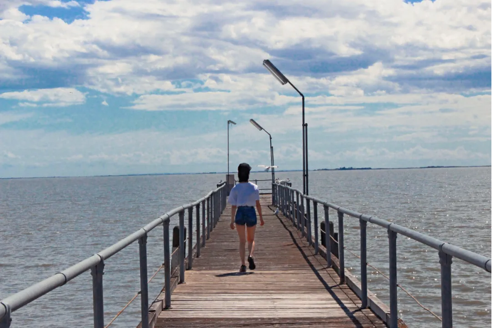

离开澳洲，已一年有余了。
It has been more than a year since I left Australia.
这一年里，我尽量让自己忙碌起来，逼迫自己不去回忆那些流浪的日子。回忆越显真实，现实就越让人唏嘘。 回国前最后一件事，卖掉了在澳洲两年时光里充当“家”这个角色最久的车。把车钥匙交到三个法国女孩手里之后，我转头走掉了。我以为我足够坚强，可还是忍不住落了泪。季老把自己的悲欢挂到二月兰上，我也把我的情感寄托在了这辆陪我踏过上万公里路的车上。
During this year, I tried my best to keep myself busy, forcing myself not to recall those wandering days. The more real the memory is, the more embarrassing the reality is. The last thing I did before returning to China was to sell the car that had been in the role of "home" for the longest time in Australia for two years. After handing the keys to the three French girls, I turned and walked away. I thought I was strong enough, but I couldn't help crying. Xianlin Ji(famous Chinese writer) put his joys and sorrows on Orychophragmus violaceus, and I also pinned my emotions on this car that accompanies me on the road of tens of thousands of kilometers.
因着疫情的影响，我回到了两年没踏足的老家。被封锁在家的这段日子，我又时常想起那些时光。
Due to the influence of corona, I returned to my hometown, which I hadn't set foot in for two years. During the days of being locked down at home, I often think of those times again.
一个傍晚，我吃完饭，独自躺在客厅的沙发上。屋内一片漆黑，但阳台的窗帘没拉上，从窗台外投射进来一丝微弱的灯光。然而这并没有使整个房间敞亮多少。
One evening, after my meal, I was lying on the sofa in the living room by myself. The room was dark, but the curtains of the balcony were not drawn, and a faint light was cast from the window sill. However, this didn't make the whole room much brighter.
我抬头望着天花板，听着轻音乐。我想起过去的无数个日日夜夜，我也是这样，躺在库努纳拉那张小床上，盯着头顶发白的天花板，想着一些令我百思不得其解的事情。只是周围的蛙鸣和狗吠，我再也听不到了。
I looked up at the ceiling and listened to soft music. I think of countless days and nights in the past, and I too, lying in that cot in Kununurra, staring at the whitish ceiling, thinking about things that eluded me. Just the croaking of frogs and the barking of dogs all around, I can't hear it anymore.
库努纳拉的夜晚
Night of Kununurra
大部分时候，我都是讨厌夜晚的。在没有灯光的日子里，我的想象力作祟，在脑海中迸发出无数可怕的画面，让我久久不能入眠。但某些时刻，我又会爱上它。一到夜里周围便是一片寂静，浮躁的心也跟着静了下来。
Most of the time, I hate nights. On days without lights, my imagination ran wild, and countless terrifying images popped up in my mind, which kept me awake for a long time. But at some point, I will fall in love with it again. At night, the surroundings were silent, and the restless heart also calmed down.
人总是自相矛盾的，一如这个世界本来也不是非黑即白的。我们总会在某一刻喜欢上自己曾经讨厌的东西，只是喜欢的这个时效，你没办法去掌控。
People are always contradicting themselves, just like the world is not black and white. We will always like the things we once hated at a certain moment, but you can't control the duration of the likes.
就好像两年前，我在澳洲，给我最好的朋友写邮件。我极少跟人说起在国外最艰难的那段时光，如何一个人负重前行，在黑暗中四处摸索。可她说，真羡慕你，可以出去冒险，可以经历这么多。我苦笑，其实我不想冒险，我终其一生也不过是想追求一个安定。
It's like two years ago, I was in Australia, writing an email to my best friend. I rarely tell people about the most difficult time abroad, how to move forward alone and grope around in the dark. But she said, I really envy you, you can go out on an adventure, you can go through so much. I smiled wryly, in fact, I don't want to take risks, and I just want to pursue a stable life all my life.
——仔细想想才发觉我当时的话多么幼稚。
——Thinking about it carefully, I realize how naive what I said at the time.
我曾经以为我讨厌居无定所，可当我经历了之后，我却爱上了这样的生活。而当我厌倦了流浪之后，我又开始期盼安定。如今虽然已处于安定的生活，可我却仍旧会怀念那些冒险的时光。所以我不敢再用“终其一生”来形容我的某个状态。漂泊也好，安定也罢，此时的我已经懂得，我的所有决定都不过代表当下而已。它们无力为我的一生负起责任。
I used to think I hated living without a fixed place, but when I went through it, I fell in love with this kind of life. And when I got tired of wandering, I began to look forward to stability. Although I am now in a stable life, I still miss those adventurous times. So I don't dare to use "for the rest of my life" to describe a certain state of mine. Whether it is wandering or stable, I already understand at this time that all my decisions represent the present moment only. They are powerless to take responsibility for my life.
这一年以来，我的人生发生了天翻地覆的变化。机缘巧合之下，我重新拾起了“学生”这一身份，读起了一点基础都没有的计算机。
Over the past year, my life has changed dramatically. By chance, I picked up the identity of a "student" again and read about computers with no basic knowledge.
翻了翻以前的日记，发现两年前在澳洲的时候，我还在羡慕我的一位朋友，她美本毕业回国，工作了一年之后又去美国换专业读了人机交互留下来工作了。当时我在日记里写到，“对于她来说，从选择这个专业开始，以前的一切都跟她没关系了。我不敢。我做不到。我总觉得自己有太多舍弃不了的东西，或者说我没办法把自己推入深渊，然后再寻找飞出来的路。”
Looking through the previous diary, I found that when I was in Australia two years ago, I was still envious of a friend of mine. She graduated from the United States and returned to China. After working for a year, she went to the United States to study human-computer interaction and stayed to work.At that time, I wrote in my diary, "For her, since she chose this major, everything in the past has nothing to do with her. I dare not. I can't do it. I always feel that I have too many things that I can't give up. Or I can't push myself into the abyss and find a way to fly out."
现在再来看，我也把以前全部推翻了，没有给自己留下一条后路。因为在选择这个专业的时候，我就已经想好要重新开始了。
Looking at it now, I also overthrew everything in the past, leaving no way for myself. Because when I chose this major, I already thought about starting over.
跟身边的人聊天，我时常会觉得，我看似虚度了很多光阴。因为我的人生轨迹跟他们都大不一样。偶尔我也会怀疑自己，这样折腾究竟算不算浪费时间。
Chatting with the people around me, I often feel that I seem to be wasting a lot of time. Because my life trajectory is very different from theirs. Occasionally I wonder if I am wasting my time.
这三年来，我似乎总是给不了自己一个满意的答案。
In the past three years, I always seem to be unable to give myself a satisfactory answer.
每一次，我都安慰自己，这样不算浪费生命，毕竟我的经历是独特的。可内心深处，我对比起别人，却也会觉得我那些独一无二的经历好像也没有多大的价值。
Each time, I consoled myself that it wasn't a waste of my life, after all, my experience was unique. But deep down, I feel that my unique experiences don’t seem to be of much value compared to others.
但如今，我才算真的可以给自己一个答复了。想起曾读过的一句话，“心之所向，素履以往。生如逆旅，一苇以航。”我想，我是没有虚度光阴的。因为喜欢，才去经历。 这些年我过得并不是那么地一帆风顺，我的人生亦不似大部分人一样按部就班，但我一点都不后悔我经历的这一切，因为这些就是我的心之所向。我心安定，我不曾漂泊。那么，回顾过去和焦虑未来，我留下一个就够了。
But now, I can really give myself an answer. I remembered a sentence I once read, "What the heart wants, follow the past. Life is like a journey against the wind, a reed sails." I think, I have not wasted my time. Experience it because you like it. I haven't had such a smooth ride over the years, and my life has not been as step-by-step as most people do, but I don't regret what I've been through at all, because these are what my heart wants. I am at peace, I have never wandered. Well, looking back on the past and worrying about the future, I'll leave one alone.
